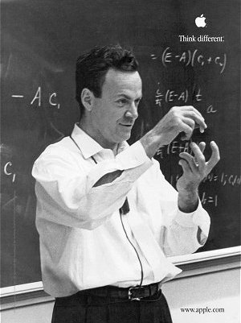

This website is dedicated to Richard P. Feynman (1918-1988),
scientist, teacher, raconteur, and drummer. He assisted in the
development of the atomic bomb, expanded the understanding of quantum
electrodynamics, translated Mayan hieroglyphics, and cut to the heart
of the Challenger disaster. But beyond all of that, Richard Feynman
was a unique and multi-faceted individual. Here is a taste of his
magnetic